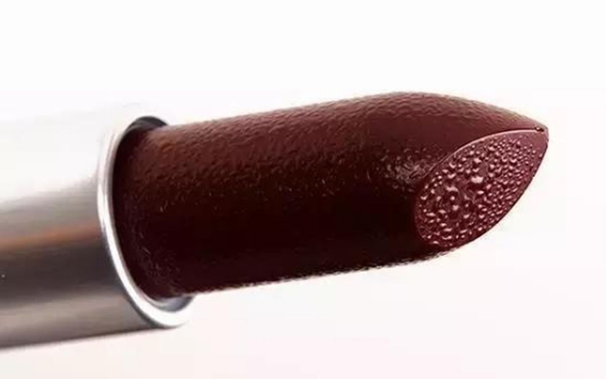

化妆品都有保质期，口红也不例外。口红的包装上会印有限用期，超过限用日期就属于过期。少数口红还有开封保质期。然而在使用过程中，要想查明生产日期却不是一件方便的事。由于口红使用环境和口红的配方构成，过期口红也不易明显变质，因此许多人纷纷笑称：“只有我死的那天，我的口红才算过期。”
化妆品都有保质期，口红在国外的保质期要求是五年，而在国内官方要求保质期是三年。口红的包装上会印有限用期，即保质期，一般为2-3年，超过限用日期就属于过期。口红还有开封后保质期，会印在管体上（为开封的图样,见上图），一般为12-24个月。同一品牌的不同口红，由于配方的不同，开封保质期也不尽相同。一般来说，固体口红比液体口红的开封后保质期更长。
为了知晓口红确切的过期时间，不仅需要知道保质期时长，还需要知道生产日期。生产日期一般印在产品外包装上，然而，购买口红后出于使用方便，大多数人都会把外包装丢弃。口红管体上还会印有产品批号，同样可以用于生产日期的查询。但一来不同国家的不同品牌，产品批号的语言、构成规则不尽相同，需要下载专门的软件查询，便利性大大降低；二来使用过程中，印刷的产品批号可能会产生磨损，导致模糊不清，难以辨认。因此，尽管有多种查询口红过期时间的方法，但在实际操作过程中，并不便捷。这也导致许多人仍在使用过期口红而不自知。
部分品牌口红生产批号查询，整理自网络
过期口红到底有多大的危害？为了测试过期口红的安全性，某测评机构将77支过期时长不等（过期一年～过期十年）的口红，参照《化妆品安全技术规范 2015 版》中微生物的检测方法进行实测。得出结论：大部分过期的口红，微生物含量一般没什么问题，只要颜色质地气味没有变化，还是可以使用的。原因在于口红的主要成分构成、极低甚至为零的含水量，有的还会添加防腐剂，保证了口红在正常环境中不容易滋生微生物。
一支口红每天使用也可以用至少三个月的时间，更何况大多数人都拥有不止一支口红，因此很难把一支口红用完。而口红在正常使用环境中很难发生变质，这成了许多人安慰自己继续使用过期口红的原因。有网友笑称：“过期前用完是不可能的，不买口红也是不可能的，所以我宣布：只要我不死，我的口红就不会过期！”“我的口红的过期日期我自己决定！”心爱的口红过期后，有不少人不想花同样的钱再购买一支一模一样的，因此明知口红过期，但仍不舍得丢弃。“贫穷“女孩们声称：“我以身试险用了过期口红，没死，没有任何不适。”
但口红之所以和其他产品一样，有规定的限用期，自然也表明口红的质地会受到时间和环境的影响，有着长短不一的“寿命”。口红放久了容易发生油脂酸败。当油脂氧化成挥发性的酸和过氧化脂质，味道会变得越来越难闻，而且接触皮肤会有刺激性，对黏膜刺激性更强。因此涂过期的口红，唇炎和过敏的风险比较大。 日常使用的口红应该存放于常温下、阴凉干燥处，高温和潮湿环境容易引起口红质变。在高温地区的夏季，口红可能会出现膏体软化的现象。许多消费者为了避免口红变质，喜欢把口红存放在冰箱中。但过低的温度对口红并不适用，开关冰箱门产生的温差也会加速口红的变质。
最适宜储存化妆品的温度是12摄氏度，如果一定要放入冰箱，需要为口红调节适宜的温度，并与食物分开放置。在随身携带口红补妆时，为了避免身体高温使口红变质，应把口红放在包里而不是直接放入口袋。不使用时，要合上口红的盖子，避免口红长时间暴露在空气中发生氧化。即使口红没有发生肉眼可见的变质，也不代表能继续安心使用。最好的保存口红的方法，就是开封后尽快使用，不要用自己的健康去试探风险。